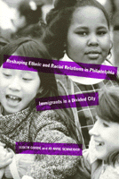

Strategies for cooperation in ethnically and racially diverse neighborhoods
Strategies for cooperation in ethnically and racially diverse neighborhoods


 Strategies for cooperation in ethnically and racially diverse neighborhoods
Strategies for cooperation in ethnically and racially diverse neighborhoods

|  |
Reshaping Ethnic and Racial Relations in PhiladelphiaImmigrants in a Divided CityJudith Goode and Jo Anne Schneiderpaper EAN: 978-1-56639-141-2 (ISBN: 1-56639-141-5) |
Finalist for the Robert E. Park Award, Community and Urban Section of the American Sociological Association, 1996
"[A] more realistic representation of the increasingly diverse nature of life in American cities."
—International Migration Review
What happens when people from diverse racial and ethnic backgrounds come together to live and work in the same neighborhood? Unlike other examinations of this question that focus on one group, this book looks at the interaction of both old and new immigrant populations in three Philadelphia neighborhoods.
In this ethnographic study, which is a result of the Ford Foundation-funded Changing Relations: Newcomers and Established Residents in Philadelphia Project, the authors consider five primary groups—whites, African Americans, Puerto Ricans, Koreans, and Eastern Europeans—in Olney, Kensington, and Port Richmond. Focusing on the interaction of racial, ethnic, and immigrant communities in schools, organized community celebrations and social events, the workplace, shopping areas, and neighborhood politics, the authors show that the contradictions of individual beliefs, actions, and strategies of power are not easily resolved.
By examining the local, citywide, and national economy and government, previous human relations efforts, changing immigration patterns, community-level power structures, real estate turnover, and gentrification, the authors evaluate current strategies to create harmony in communities with an ever-changing mix of established residents and newly arrived immigrants. Through their findings, Judith Goode and Jo Anne Schneider develop better alternatives that will encourage understanding and cooperation among different racial and ethnic groups sharing their lives and neighborhoods.
Excerpt available at www.temple.edu/tempress
"Within each neighborhood, everyday activities bring people into varied situations that play a role in structuring contact and forming ideas about social differences. The daily lives of adults take them into many different settings where they sometimes intimately and sometimes impersonally interact with people from other groups. They also observe interactions between others, as well as participating in conversations about individuals and groups. The chapter describes two aspects of everyday social reality: the intimate, trusting personal relationships of individuals and the structure of public institutions that channel their contacts. Our observations of the personal social networks and daily activities of community residents help to illustrate how the structure of these networks and institutions influences the nature and frequency of social interaction and help to shape definitions of likeness and similarity contributing to the various models of difference.
"Often there are major discontinuities between the ideas people express and their behavior toward others in different settings. Entering discontinuous social frameworks as they shop, deal with their children's school day, go to work, see neighbors on the block, and spend leisure time with friends and relatives, individuals experience social difference in a wide variety of ways. Many of the structures that frame daily life have been shaped by political and economic changes in Philadelphia. Some have been affected by broad citywide policies and processes. Others reflect more local influence, where the experience of turnover and change, crisis events, and memories of the past affect perceptions of social categories in the present. Self-identities form and reform, alliances are forged between individuals an groups. We explore these discontinuities in the following discussion, moving from the post personal, intimate relationships and interactions to the more impersonal."
From Chapter 5, "Every Day Activities: Personal Ties and Structured Institutions"
"[T]his is an excellent book that I would like to be able to use in courses about race and ethnicity at both the graduate and undergraduate level. The ideas are very worthwhile, carefully documented, and well thought through."
—Anthropology and Education Quarterly
Maps
Acknowledgments
1. Introduction
Part I: The Citywide Context
2. The Political Economy of Philadelphia
3. The Effects of New Immigration on Social Categories and Human-Relations Institutions
Part II: Life in the Neighborhoods
4. Neighborhood Structures and Community Organizations
5. Everyday Activities: Personal Ties and Structured Institutions
6. Focus Events
Part III: Restructuring Diversity
7. Simultaneous Contradictions
8. Strategies for Action
Notes
Bibliography
Index
 | Judith Goode is Professor of Anthropology and Affiliated Professor of Geography and Urban Studies at Temple University. She has co-authored several books on topics related to urban anthropology, including The Anthropology of the City. |
Jo Anne Schneider, Program Director at the Institute for the Study of Civic Values, has published numerous articles on ethnicity, race relations, and immigration. She served as 1989-1990 American Anthropological Association Congressional Fellow.
Race and Ethnicity
Anthropology
Urban Studies
© 2015 Temple University. All Rights Reserved. This page: http://www.temple.edu/tempress/titles/887_reg.html.